File Menu
The File menu starts, opens, saves and publishes animations, brings animations in from Roblox, Moon Animator 2, Blender and the game, sends them out again, and sets up the rigs you animate. Its rows are the same in every workspace, apart from a few that belong to the Animate or Scene workspace.
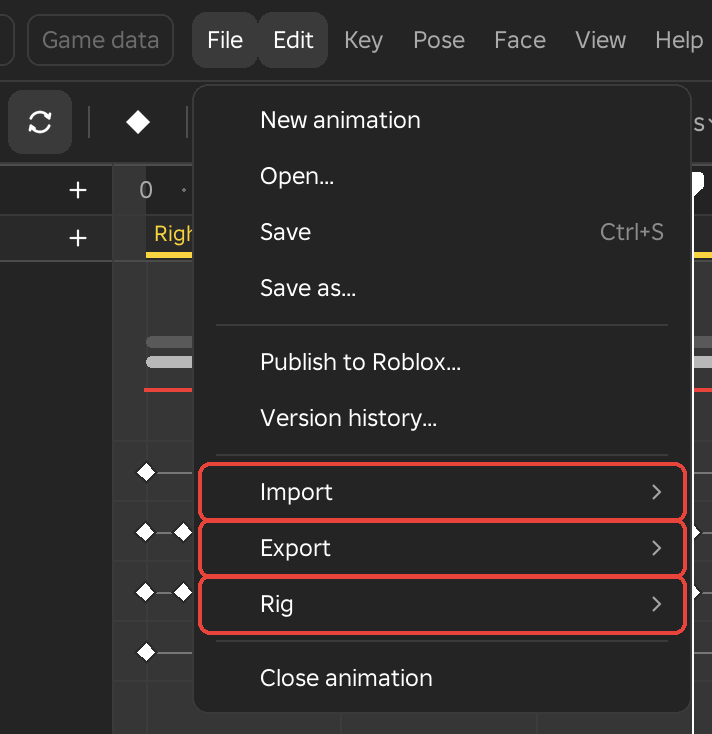
New Animation
- Menu
- File ‣ New animation
New animation starts an empty animation on a rig. When no animation is open it uses the rig you clicked in the viewport or selected on the start screen. When an animation is open it clears that animation and starts again on the same rig.
The rig goes back to its rest pose, the name goes back to Untitled, and the loop setting, events and layers start clear. The rig shows its own face again. The frame rate and length of the new animation come from the New animations settings in Preferences.
If the open animation has unsaved changes, Framez first asks whether to save them. The buttons are Save (Save as for an animation that is still called Untitled), Do not save and Cancel. When a scene is open, Framez also asks before closing the scene. One undo takes a New animation back.
Example
For example, after saving an idle for a character, choose New animation to start the walk on the same rig. The timeline is empty and the rig stands at rest.
Open
- Menu
- File ‣ Open...
Open lists the saved animations of the rig so you can carry on with one. It asks about unsaved changes first, as New animation does, then lets go of the open animation and shows the rig's animation browser in place of the timeline.
A search box sits above the list. Each row shows the animation's Name, its Length, the number of Keys, whether it Plays as a loop or once, its Priority, and when it was Saved. Clicking a column heading sorts the list by that column, and clicking it again reverses the order. An animation that was not made in Framez is tagged "from outside Framez".
Clicking a row selects it. Double-clicking it, or pressing Enter, opens it. F2 renames the selected animation and Del deletes it after asking. The New animation button at the top right starts a new one on the same rig.
Options
- Open
- Opens the animation on the rig with its keys, curves, events and layers.
- Rename...
- Asks for a new name. A name that another save of the rig already uses is refused.
- Duplicate
- Saves a copy named after the original with "copy" added, and selects it. The copy does not keep the original's Roblox asset id.
- Version history...
- Opens the list of earlier versions of the animation, as Version History does.
- Show in Explorer
- Selects the animation in Studio's Explorer.
- Delete...
- Asks "Delete NAME?" and removes the save when you confirm.
These are the rows of the menu that opens when you right-click an animation in the list.
Notes
Opening one of a scene's animations opens the whole scene with it.
Save
- Menu
- File ‣ Save
- Shortcut
- Ctrl+S
Save stores the animation in the place, under the rig's name in the RBX_ANIMSAVES folder of ServerStorage, using the name shown in the header. An animation that is still called Untitled opens Save as first. In a scene it saves the animation of every rig in the scene together with the scene itself (see Saving a scene).
Roblox can store only a few easing styles, so wherever a span uses a curve it cannot hold, Framez writes a pose on every frame of that span. The game then plays exactly what you see in Framez. Opening the saved animation in Framez brings back the keys and curves you made, not the baked frames. When animation layers have keys, the animation is saved flattened and the layers are kept beside it.
The status line then names the save and the folder it went to, and its Show button selects the save in the Explorer.
An animation with no keys is not saved, and the status line says so.
Notes
Saving writes into the place, so save the place itself afterwards. A place that is not saved loses the animation when Studio closes. In Team Create, saving over an animation that someone else saved since you opened it asks first (see Team).
Example
For example, save a take before trying a different timing on it. If the new timing is worse, open the saved take again from Open.
Save As
- Menu
- File ‣ Save as...
Save as saves the animation under a name you type, next to the rig's other saves. The animation then carries the new name. A small box asks for the Name, and Enter confirms it.
If a save with that name already exists, Framez asks "NAME is already saved. Replace it?" with Replace and Cancel.
Example
For example, save a second version of a sword swing under a new name before experimenting, so the first version stays as it was. Giving a first draft its real name works the same way.
Publish to Roblox
- Menu
- File ‣ Publish to Roblox...
Publish to Roblox saves the animation, selects the saved copy and opens Roblox's own upload window for it. A small box beside that window lists the two steps. In the upload window you set Creator to whoever owns the game and submit. Back in Framez you click Get the ID, select the animation in the list Roblox shows, and Framez stores that asset id with the animation so game scripts can use it.
An animation that is still called Untitled opens Save as first. An animation with no keys is not published. Framez opens Roblox's upload window but never uploads anything by itself.
Options
- Get the ID
- Lists your animations on Roblox. The one you select becomes this animation's asset id, and the status line shows it.
- Later
- Closes the box. The id can be set afterwards on the Clip page of the Inspector, in the In the game section, with the Get the ID button or by typing it into the Asset ID field.
Example
For example, publish a finished attack animation, set Creator to the group that owns the game, then copy the asset id into the script that plays the skill.
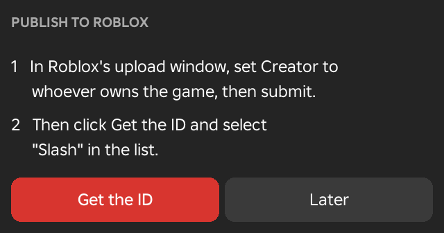
See Also
Animation Settings holds the Asset ID field.
Version History
- Menu
- File ‣ Version history...
- Right-click
- A save in the Open browser, then Version history...
Every Save keeps a copy of the animation as a version. Version history lists the versions of the open animation, newest first. Each row shows the version number (v1, v2 and so on), when it was saved, its length in frames and its number of keys. The newest version is the current save and is ticked.
Selecting an older version restores it as the current save and, after asking about any unsaved changes, opens it. The save it replaces stays in the list as a version of its own, so a restore can itself be undone by restoring the later version. The list also has Show in Explorer, which selects the folder that holds the versions, and a line saying whether the latest copy was also written to disk.
Framez keeps the last 10 versions of each animation, or the number chosen in Preferences (5, 10, 25 or 50).
Notes
The versions live in the place, in the FramezHistory folder of ServerStorage, so a place that is not saved loses them. While the Framez Helper runs, each Save is also written to the backup folder on disk as a .json file and an .rbxm file. Dragging the .rbxm into the rig's folder under RBX_ANIMSAVES in ServerStorage brings that version back.
Example
For example, after a retime has ruined a combo and undo no longer reaches back far enough, open the history and select the version saved before it.
Import
The Import rows bring motion in from Roblox, from Moon Animator 2 saves, from Blender and from scenes that were put in the game. They all work on the open animation, so most are greyed until one is open.
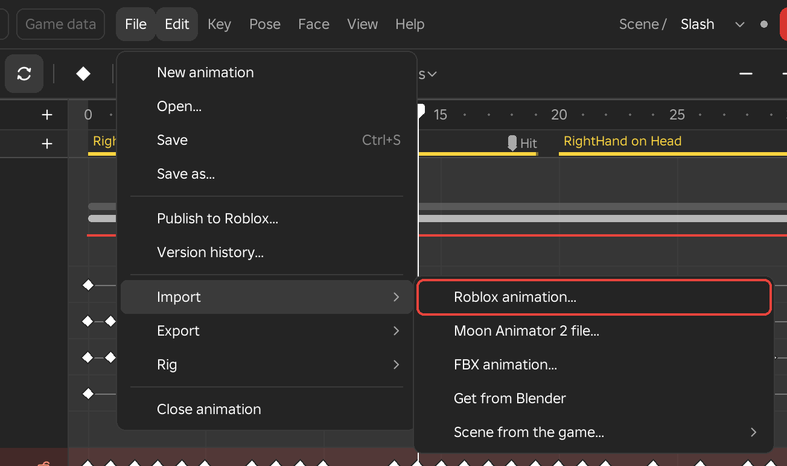
Roblox Animation
- Menu
- File ‣ Import ‣ Roblox animation...
Roblox animation puts an existing Roblox animation on the open rig as keys. The animation can be a published one, given by its asset id or link, or an Animation, KeyframeSequence or CurveAnimation that already exists in the place. R6 animations go onto R15 rigs and R15 animations onto R6 rigs, limb by limb. The animation's events, hit windows and foot contacts come with it; when it is added at the playhead, its events are added after the playhead beside the clip's own.
Framez reads the animation the way Roblox plays it, so every easing style and curve comes out as the game shows it, and then thins the result to the keys it needs. The import is one undo step.
Options
- Asset id or link
- The id of a published animation, or a link that contains it.
- Replace the clip, Add at the playhead
- Replace the clip makes the imported keys the whole animation, with its length, loop setting and priority taken from the imported animation, and asks first when the open animation already has keys. Add at the playhead writes the imported keys starting at the playhead, replaces any keys that the imported stretch covers, and makes the animation longer when the imported keys run past its end.
- Import
- Imports the animation named in the Asset id or link field. Enter does the same.
- In this place
- Lists the animations found in the place, with where each one is. Selecting one imports it.
Notes
Roblox only hands over animations that your account can use. These are your own, those of groups you belong to, and Roblox's own. Anything else fails, and the status line gives Roblox's reason.
Example
For example, import a catalog emote as the starting point for a dance and edit it from there, or bring in an animation that was made for an R6 character onto an R15 rig.
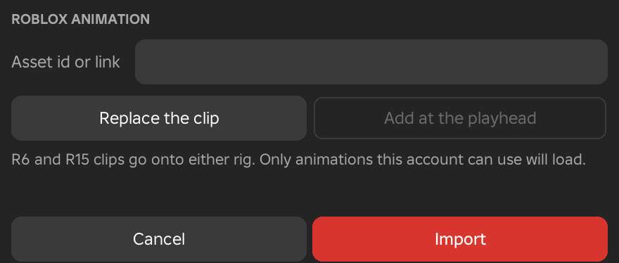
Moon Animator 2 File
- Menu
- File ‣ Import ‣ Moon Animator 2 file...
Moon Animator 2 file opens a Moon Animator 2 save that exists in the place. The rig's keys come in with their easing styles, and the other rigs, cameras and parts in the save join the scene with their keys.
A list shows the saves found in ServerStorage and ReplicatedStorage, newest first, nine at a time with a More row for the rest. Each row also says how many frames and items the save has. Selecting one opens it. If the open animation has keys, Framez asks "Replace the open clip?" first. With no save in the place the status line reads "No Moon Animator 2 files in this place."
What comes across
- The rig
- Its keys go onto the open rig. The rig's own CFrame track goes into the root joint.
- Other rigs
- Join the scene with their keys.
- Cameras, parts and models, emitters
- Cameras become scene cameras. Parts and models become props with any keyed property. Particle emitters become effects.
- Markers
- Become events. A marker with a width also gets an event named after it with End added.
- Not opened
- Camera attach and look-at keys, sound and humanoid actions, terrain colours and bones. The message after the import lists what was left out.
Example
For example, move a cutscene from Moon Animator 2 into Framez without exporting each rig and camera separately. The scene opens with every rig, camera and prop that was animated.
Eclipse Save
- Menu
- File ‣ Import ‣ Eclipse save...
Eclipse save opens an Eclipse Animator animation or project that exists in the place. Eclipse keeps its saves inside the place: an animation under its rig's AnimSaves, a project in ServerStorage, in Eclipse Animator Saves. The keys come in as Framez keys with their easing, and a project opens as a scene.
A list shows the saves found, newest first, nine at a time with a More row for the rest. Each row says which rig the animation is on, or that it is a project. Selecting one opens it, on its own rig. If the open animation has keys, Framez asks "Replace the open clip?" first. With no save in the place the status line reads "No Eclipse saves in this place."
What comes across
- Keys
- Every key you set in Eclipse, at its frame, with the clip's frame rate, length and looping. A key's easing gives the curve to the next key. Linear, Constant and the easing styles come in as they are. A default Eclipse key plays as Sine InOut, which follows Eclipse's curve to within 1 percent of the move. A custom Bezier comes in as a Custom curve with the same four numbers. A channel edited in Eclipse's graph editor, which no single curve follows, comes in as a key on every frame between the two keys, taken from the poses Eclipse saved, so it plays exactly as it did.
- Layers
- The base layer is the clip's keys. Additive and Override layers become animation layers with their names and weights.
- Follow Parent
- A limb with Follow Parent turned off stays where its keys put it. When something above it moves while it is off, it gets the World parent from that key, as Parent To gives it, and goes back to its own rig at the key that turns it on.
- IK
- Eclipse keys the arm or leg the IK solved, so the limb's keys carry the IK's pose.
- Projects
- The first rig opens with its keys and the other rigs join the scene. The camera becomes a scene camera with its place and field of view. A Camera Shake becomes a Camera shake on the Effects row, with its strength, length and fades. A shake whose strength rises and falls more than once becomes the keyed Shake of the screen effects instead. Subtitles become subtitle lines with their text, speaker, font, size, colours, box, width, portrait and fades. Other events become events.
- Not opened
- Effects other than Camera Shake, face controls, root motion and IK targets. The message after the import names what was left out and any part the rig does not have.
Example
For example, open a cutscene made in Eclipse with its camera, a camera shake on the hit and its dialogue, and carry on editing it in Framez with every key, layer and subtitle line in place.
FBX Animation
- Menu
- File ‣ Import ‣ FBX animation...
- Needs
- The Framez Helper, and Blender with the Framez tab
FBX animation brings a clip from another 3D program or a motion capture file onto the open rig through Blender. Framez sends the rig to Blender. In the Framez tab of Blender's side panel, the Import a clip... button reads the FBX or BVH file and retargets it onto the rig, and Get from Blender brings the result back into Framez.
The clip can come from a Mixamo character, a Roblox R15 or R6 export, or a capture session. The In place option is on by default, so the hips keep their up and down motion but not their travel across the floor.
Example
For example, take a downloaded run cycle for an R15 character. Choose FBX animation, import the file in Blender, and then choose Get from Blender to receive it as keys you can edit.
See Also
Helper and Blender setup explains how to install the Framez tab.
Get from Blender
- Menu
- File ‣ Import ‣ Get from Blender
- Needs
- The Framez Helper, and Blender with the Framez tab
Get from Blender brings back what the Framez tab in Blender sent with Send to Framez and writes it into the open animation as keys. Where Blender marks which frames are its keys, those frames become keys with Blender's easing. Framez adds an extra key wherever its own curve would differ from Blender's pose by more than half a degree or 0.01 studs. A pose on every frame with no list of keys is thinned to the keys it needs.
Events, weapon switches and face keys move to the frames of their markers in Blender. One whose marker was deleted stays where it was. Joints that Blender does not know are listed and left alone.
Shape keys in Blender whose names match the head's face controls become keys on those controls, in one undo step. The match ignores case, spaces, dots and underscores, and a FACS prefix is optional. A channel that Blender does not key is left alone, and a head with no face controls says so. Constraints and drivers sent with Send the rig setup come in too, as described under Rig Setups from Blender.
Example
For example, send a combat animation to Blender, tidy its curves in the Graph Editor, then choose Get from Blender to bring the polished result back.
See Also
Send to Blender and Live Link with Blender cover the other directions.
Rig Setups from Blender
- Menu
- File ‣ Import ‣ Get from Blender
- Needs
- The Framez Helper, and Blender with the Framez tab
A Blender armature can carry constraints, limits and drivers. Select the armature in Blender, open the Framez tab in the 3D viewport's side panel (N), and click Send the rig setup. Then choose Get from Blender in Framez. Each constraint or driver is added to the joint with the same name as an item in the Modifiers window, so it can be changed and undone like any other tool result.
Influence carries over, and muted constraints are left out. Anything with no match is named in the status line.
What each one becomes
- Copy Rotation
- A constraint of kind Copy.
- Copy Location
- A constraint of kind Point.
- Damped Track, Track To, Locked Track
- A constraint of kind Aim.
- Child Of
- A constraint of kind Follow.
- Limit Distance
- A constraint of kind Keep a distance.
- Floor
- A constraint of kind Stay above, with its object.
- Limit Rotation
- The joint's limit, as a hinge when only X can move and otherwise as a cone and a twist.
- IK
- An IK chain of the same number of joints.
- A bone driver on rotation or location
- A driver whose formula is the Blender expression, set to Replace and live.
Example
For example, a creature rig built in Blender with a look-at constraint on the head keeps that behaviour in Framez, where the head keeps tracking its target while you animate.
Scene from the Game
- Menu
- File ‣ Import ‣ Scene from the game...
Scene from the game puts a scene that was exported to the game back into this place's saves. The scene's record returns, together with the animation of every rig that this place no longer has. The row opens a list of the scenes found in the game's FramezScenes folder in ReplicatedStorage. Selecting a scene restores it, and Open then opens it like any other scene. With no scene in the game, the row reads "No Framez scene in the game".
A scene reaches the game through Put in the game. A scene that was exported by an older version of Framez has no copy to restore.
Example
For example, if a place lost its saves but the cutscene still plays in the published game, import it from the game and carry on editing.
Unsaved Work and Recovery
- Menu
- File ‣ Import ‣ Recover unsaved work...
While an animation has unsaved changes, Framez keeps a recovery copy a few seconds after the last edit. It is a copy of the animation exactly as Save would write it, including keys, curves, events, layers and pins, and it is stored with Framez's own settings, not in the place. In a scene, only the posed rig's animation is copied. A Save, or closing the animation without saving, removes its copy.
The next time Framez opens in the place, the start screen shows a card named Unsaved work, with the animation and rig, the time of the copy, and the buttons Recover and Discard. Discard asks first, because it cannot be undone. The row Recover unsaved work... appears in the Import submenu only while copies exist. It lists every copy for the place, and each has Recover and Discard. Recover opens the copy on its rig, unsaved and with its asset id back.
How often copies are made, and how many are kept, are set in Preferences.
Notes
A recovery copy is not a save. After recovering, save the animation and then the place.
Example
For example, if Studio closes before you saved an hour of work, open the place again, start Framez and click Recover on the start screen.
Export
The Export rows turn the open animation into something else, such as an emote for the Marketplace, a set of movement animations, an additive layer, a Blender file, a set of aim poses or a video.
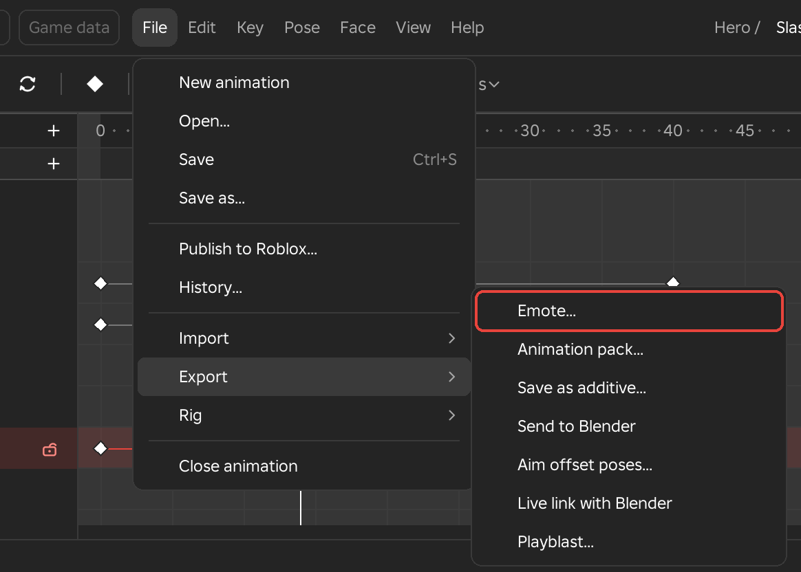
Emote
- Menu
- File ‣ Export ‣ Emote...
Emote checks the open animation against the rules Roblox applies to UGC emotes and saves it as an emote. The window lists one row for each rule. A red row is a rule that makes Roblox refuse the upload, a grey row is something Save as emote leaves out, and a green row passes. Show passed lists the green rows too. Most rows have a button that fixes the problem, and Check again reads the animation once more.
Options
- Standard R15
- The rig must be Roblox's standard R15, with its joints named and joined as Roblox's are.
- Length
- The animation can be 10 seconds at most. The fix is Stretch, which squeezes every key into the limit, or Trim, which cuts at the limit.
- Near the root part, Above the floor, Speed
- When they fail, these rows read Too far from the root part, Too low and Too fast. Every body part must stay within 5 studs of the root part, no more than 3.1 studs below it, and never move faster than 30 studs per second. The fix is Pull back, which scales the root's travel back towards where it starts and then lifts the root where the body is still too low.
- Joints stay joined
- Only LowerTorso may move. Every other part may only turn.
- Every joint on Roblox's R15, Events
- These two rows are notes. Joints that a standard R15 does not have, such as a weapon, and events after the first are left out of the emote, and the rows list them.
- Go to
- Rows with no one-click fix have Go to, which jumps to the frame and selects the limb.
- Fix all
- Runs every available fix in one undo step.
- Save as emote
- At the bottom right. It writes the animation as a CurveAnimation named after the animation with _EMOTE added, next to the saves, and then shows Roblox's two upload steps as cards.
The two cards cover Roblox's upload. In the first, Framez opens Roblox's upload window, where you set Animation Type to Emote, tick Create Animation Object in Workspace and save. Framez notices the Animation that Roblox's window makes in the Workspace, or you can select it and click Use the selected one. In the second, Framez opens the Avatar Item upload on that Animation, where Content Type is Avatar Item, Asset Category is Emote and Submit sells it, with Roblox's fee. The step cards need Studio 0.737 or later.
Notes
Framez opens Roblox's upload windows and does not upload anything itself. The emote marker that Roblox requires is added by Roblox's upload window when Animation Type is Emote. If Roblox reports "missing a valid UGC emote marker", the animation was uploaded as a plain animation, so repeat the first step with Animation Type set to Emote.
Example
For example, a dance that travels across the floor is refused for being too far from the root. Pull back scales the travel down until it passes, and the dance keeps its poses.
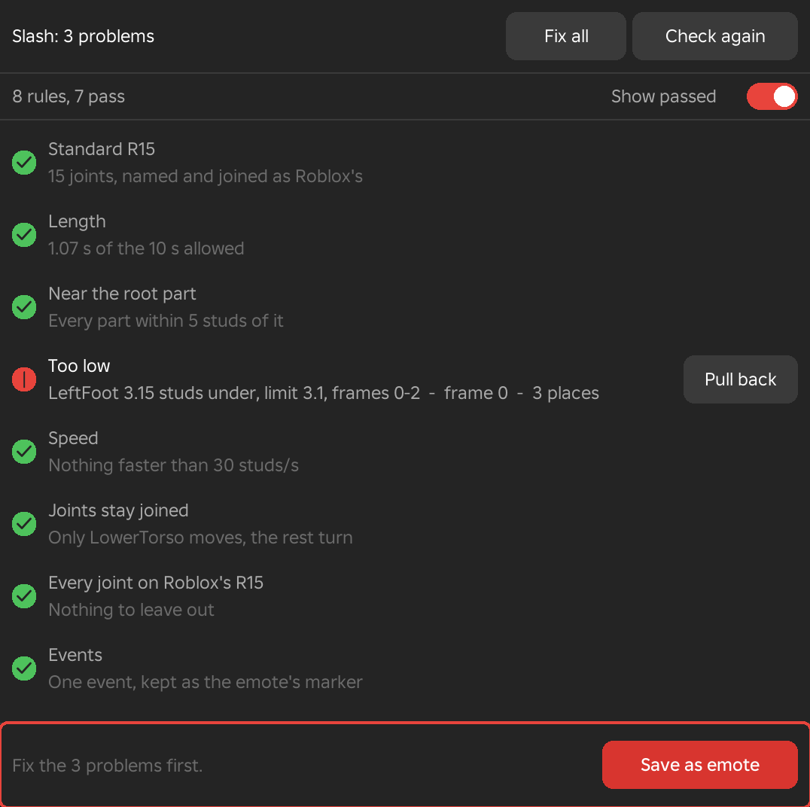
Animation Pack
- Menu
- File ‣ Export ‣ Animation pack...
Animation pack builds a set of movement animations for the Marketplace or for your own game. The window has a slot for each animation of a pack. The slots are Idle, Idle 2, Walk, Run, Jump, Fall, Climb, Swim and Swim idle. Each slot holds a saved animation of the open rig. Idle and Idle 2 each have a weight, which sets how often that idle plays, and Idle 2 may stay empty.
The Pack field names the pack, and packs are kept in the place in the FramezPacks folder of ServerStorage. Typing a new name asks whether to start a new pack. The Packs button switches between packs and holds Rename pack..., Delete pack and Delete from this game.
Options
- Check
- Opens each animation in turn and checks it against the Marketplace's rules. The rig must be R15, every animation must loop except Jump, no animation may be longer than 10 seconds, only LowerTorso may move, and LowerTorso may not move more than 1.5 studs from its start. Roblox's reach, height and speed limits apply as well, and Emote checks them the same way. Each failed row has a fix that saves the animation again, named Set its loop, Keep only turns, Pull LowerTorso in or Fit and pull back. The animation that was open opens again afterwards.
- For the Marketplace
- Makes each animation a CurveAnimation named after the pack and its slot, in the pack's folder, and selects them in the Explorer. The window then lists the values that Save to Roblox asks for each one, which are Animation type, Sub animation, Weight and Parent model name.
- Use in this game
- Adds a LocalScript named FramezMovement to StarterCharacterScripts. It gives every character the pack's animations through its Animate script, in R15 and R6 games. Every animation must be published first.
- Close
- Closes the window.
Notes
Save the open animation first, because Check and its fixes open each animation in turn.
Example
For example, a game with its own locomotion can fill Idle, Walk, Run and Jump with four saved animations, publish them, and click Use in this game so every character plays them.
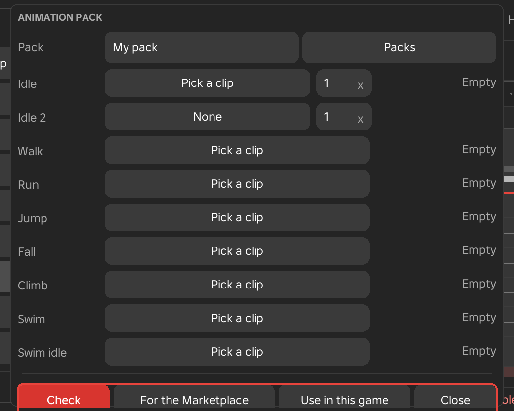
Additive Animation
- Menu
- File ‣ Export ‣ Additive animation...
Additive animation saves the open animation as an additive layer, named after the animation with _ADD added. Every pose is stored as the difference from a reference pose. In a Roblox animation graph, an Add node then plays it over another animation and moves each joint by the same amount.
Options
- Frame 0, This frame, Rest pose
- The reference pose that is subtracted. Frame 0 uses the first frame, This frame uses the frame at the playhead, and Rest pose uses the rig's rest pose.
- Save
- Writes the animation. If it already exists, Framez asks "NAME_ADD is already saved. Replace it?"
Notes
Make the animation on top of the pose it will play over, such as the stance, and select that frame as the reference. Events and weapon switches are not copied into the additive animation. If nothing moves away from the reference pose, nothing is saved and the status line says so.
Example
For example, a breathing loop, a recoil or a flinch that should play over any other animation can be saved as an additive layer and added in the game's graph with a weight you control.
Send to Blender
- Menu
- File ‣ Export ‣ Send to Blender
- Needs
- The Framez Helper, and Blender with the Framez tab
Send to Blender sends the rig and the open animation to Blender. In the Framez tab of Blender's side panel, Get from Framez builds an armature with a bone for each joint, a box for each part, the pose on every frame, and the information about which frames are keys and how each one eases. Events, weapon switches, face keys, hit windows and foot contacts arrive as timeline markers.
Notes
Animation layers, clip blocks and curve modifiers stay in Framez. Send says so when they change what Framez shows.
Example
For example, send a clip to polish its curves with Blender's tools, or keep a Blender copy of an animation beside the Roblox one.
See Also
Get from Blender brings the changes back.
Aim Offset
- Menu
- File ‣ Export ‣ Aim offset...
- Workspace
- Animate
Aim offset saves nine aiming poses made from the pose at the playhead, for a character whose upper body follows the camera or a target while the legs play their own animation. The poses look left, right, up, down and into the four corners, plus the centre. They are saved as the animation's name with _AIM_ and C, L, R, U, D, UL, UR, DL or DR added, ready to be placed in a Roblox Blend2D with X as yaw and Y as pitch from -1 to 1.
In each pose the chest takes 60 percent of the turn and the head takes the rest. The arms either take the whole turn, so the hands point where the eyes look, or ride along with the chest. On an R6 rig the hips turn back so the legs stay where they stand. Afterwards a preview copy of the rig plays the poses live, with Yaw and Pitch fields from -1 to 1 to aim it.
Options
- Left and right
- How far the sideways poses turn, from 5° to 120°. The default is 60°.
- Up, Down
- How far the poses look up and down, each from 5° to 90°. The default is 45°.
- Additive, Full poses
- Additive stores each pose as the difference from the pose it was made from, to be added over another animation. Full poses stores whole poses.
- Arms aim too, Arms ride the chest
- Whether the arms take the whole turn or follow the chest.
- Make them
- Writes the nine saves. If they already exist, Framez asks whether to replace them.
Notes
The rig needs a head on a Neck joint. The row is available in the Animate workspace, and Menu search lists it from the other workspaces.
Example
For example, pose a gunslinger at rest, make the nine aim poses, and blend them in the game by the camera's yaw and pitch so the torso and gun follow where the player looks.
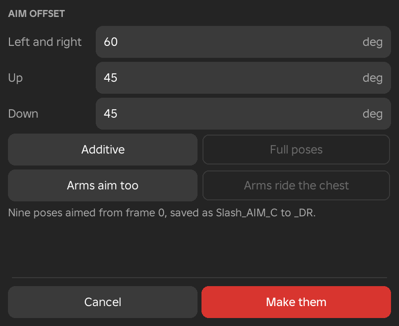
Live Link with Blender
- Menu
- File ‣ Export ‣ Live link with Blender
- Needs
- The Framez Helper, and Blender with the Framez tab
Live link with Blender keeps the open animation and Blender in step while you work. An edit in Framez shows in Blender, and an edit in Blender shows in Framez. Keys stay keys in both directions, with their easing and key type. Where one program cannot draw the other's curve exactly, a Generated key is added.
Open the animation, choose the row so that it shows a tick, click Live in Blender's Framez tab, and edit in either program. To turn the link off, choose the row again.
Options
- Framez to Blender
- Framez sends a moment after an edit stops, and keeps sending twice a second while a drag goes on.
- Blender to Framez
- Only the joints that changed are written, and the message reads "Blender: N joints changed." It is one undo step, and the playhead and view stay where they were.
- Markers
- Events, weapon switches, face keys, hit windows and foot contacts travel as timeline markers and follow retimes.
- Stays in Framez
- Animation layers, clip blocks and curve modifiers.
Example
For example, polish curves in Blender's Graph Editor while watching the result play on the rig in your scene in Studio.
See Also
Helper and Blender setup explains how to install the Framez tab.
Playblast
- Menu
- File ‣ Export ‣ Playblast...
- Workspace
- Animate and Scene
- Needs
- The Framez Helper
Playblast records the animation from Studio's viewport to a video. The dialog opens with the settings you used last. Record starts the recording, which steps through the animation one frame at a time. Esc stops it and discards what was written. When it finishes, the video opens if Open when done is chosen, and a small menu offers Show in folder.
Options
- Studio's view, Scene camera
- Which camera to record from. The choice appears only when the open scene has a camera, and the scene camera follows its cuts.
- Whole clip, Play range, From / to
- Which frames to record. Play range appears when a play range is set. With From / to, the From and To fields set the first and last frame.
- As the view, 1280 x 720, 1920 x 1080
- The video size. The two fixed sizes are cut to 16:9 from the middle of the viewport.
- Frame rate
- The animation's own frame rate, or 30 fps.
- Frame number, No number
- Whether the frame number is drawn in the bottom left corner.
- Onion skin, No onion skin
- Whether the onion skin is included in the video.
- Animation only, Reference beside it
- Whether the linked reference video is placed next to the recording. The choice appears when a reference video is linked.
- MP4 video, PNG frames
- The file format. PNG frames writes one image for every frame.
- Folder
- Where the video or frames are written. The default is Framez playblasts inside the Videos folder.
- Open when done, Do not open
- Whether the finished video opens.
Notes
The first time, Studio asks to allow screenshots. Keep Studio's viewport on screen and unchanged in size while it records. Framez hides its own handles, paths and limb boxes during the recording.
Example
For example, record a clip at 1920 x 1080 with the reference video beside it to show a director how closely the animation follows the footage.
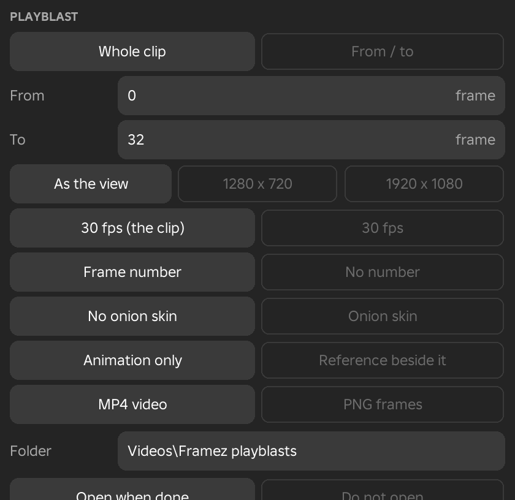
Rig
The Rig rows put rigs into the place, turn ordinary models into rigs, add or remove joints, tell Framez which part is which on a custom character, and build the controls you pose a rig with.
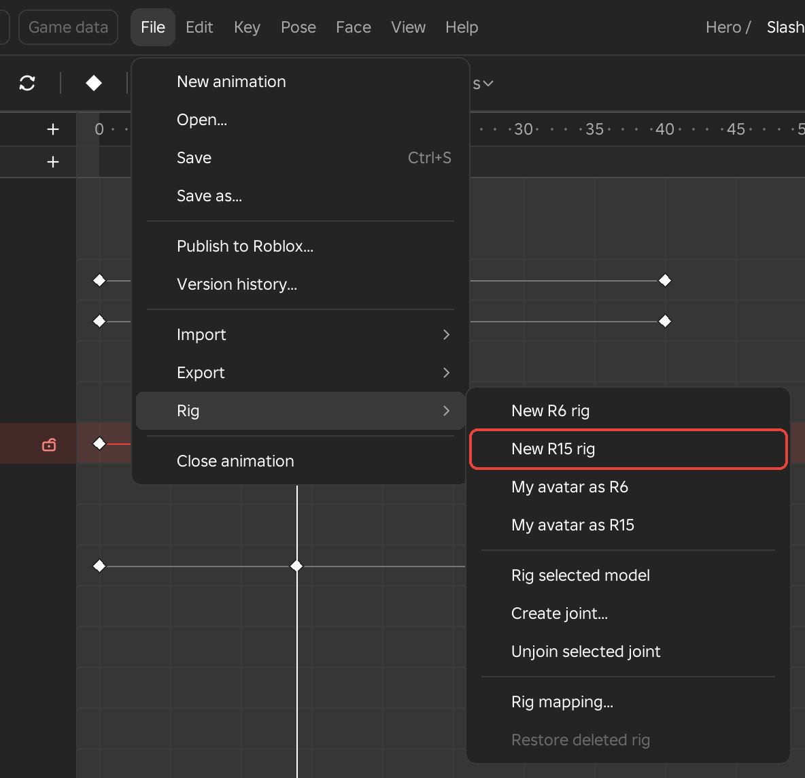
New Rig and My Avatar
- Menu
- File ‣ Rig ‣ New R6 rig
- File ‣ Rig ‣ New R15 rig
- File ‣ Rig ‣ My avatar as R6
- File ‣ Rig ‣ My avatar as R15
These four rows put a rig into the place and select it. New R6 rig and New R15 rig add Roblox's own default character, in the classic colours: a yellow head and arms, a blue torso and green legs. My avatar as R6 and My avatar as R15 add the avatar of the account signed in to Studio, with its clothes and accessories, built as R6 or R15.
The rig stands on the ground 12 studs in front of the camera and faces it, beside any rig that is already there. Its root part is anchored and any scripts it came with are removed. An R15 gets Motor6D joints, so it opens at once. The rig gets a name that no other rig or save folder uses, such as R15 Rig, or the account name followed by R6 or R15, with a number added when the name is taken. When an animation or scene is open, the new rig joins the scene. Otherwise the status line suggests New animation to start on it. One undo removes it.
Example
For example, start a fresh character animation with New R15 rig, or animate your own avatar by adding it with My avatar as R15.
Avatar or Outfit
- Menu
- File ‣ Rig ‣ Avatar or outfit...
Avatar or outfit... brings in any character. Type a username or a user id, or paste a profile link, a catalog bundle or outfit link, or a link to one catalog item such as a shirt, hair or a hat. Words that are none of these are searched in Roblox's catalog, and the matches are listed to choose from. Nothing needs to be bought: catalog items load in Studio for animating.
Options
- R6, R15
- The body the new rig is built as.
- Their body, Default body
- Their body keeps the avatar's own body parts and proportions. Default body uses Roblox's plain body and keeps the clothes and accessories.
- New rig
- Adds a rig wearing it in front of the camera, as New R15 rig does. Pressing Enter in the field does the same.
- Change the look of the selected rig
- Puts the clothes, colours, accessories and face on the rig selected in the Explorer, or the open rig. Its joints, names and keys stay, so a character can be dressed after it is animated.
Example
For example, for a fight between two characters from a show, search for each outfit by name, choose New rig for both, and animate them in one scene.
Rig Selected Model
- Menu
- File ‣ Rig ‣ Rig selected model
Rig selected model gives the model selected in the Explorer, such as a door, a chest or a creature, a joint on every piece so that it can be animated. The row is greyed until a model is selected. The main part is the model's PrimaryPart, or its largest part when there is none, and every other piece gets a Motor6D joint to it. Pieces that are welded together stay together and move as one, and parts that already have a joint keep it.
The main part is anchored. If the model has no Humanoid or AnimationController, an AnimationController with an Animator is added so the model plays animations in the game. The status line reports how many joints were made.
Example
For example, rig a treasure chest made of a base and a lid. The lid gets its own joint, and a short animation can open and close it.
Create Joint
- Menu
- File ‣ Rig ‣ Create joint...
Create joint adds a Motor6D between two selected parts, so that one of them can be animated. Select two parts in the Explorer, the part that holds first and the part that moves second, by holding Ctrl while clicking. A part can be an accessory, which counts as its Handle, or a model, which counts as its main part. The dialog says which part holds which. Welds between the two parts are removed.
Options
- Swap
- Exchanges the holding and moving part.
- Moving part's centre, Holding part's centre, Halfway
- Where the joint turns. The default is the centre of the moving part. Edit Pivot can move the turning point later.
- Join
- Creates the joint.
Notes
The parts must not belong to the rig that is open. If they do, Framez asks you to close the animation first. The join is one undo step.
Example
For example, join a sword to a hand, a cape to the torso, or a tail to a creature, so the sword, cape or tail can be keyed.
Unjoin Selected Joint
- Menu
- File ‣ Rig ‣ Unjoin selected joint
Unjoin selected joint turns the Motor6D selected in the Explorer into a weld. The part stays where it is and is no longer animated. The status line says which part stopped animating. As with Create joint, the joint must not be part of the rig that is open, and the change is one undo step.
Example
For example, if a prop that was joined to a hand should become a fixed part of the character, convert its joint to a weld.
Rig Mapping
- Menu
- File ‣ Rig ‣ Rig mapping...
Rig mapping tells Framez which part of a custom rig is which part of the body, so that IK, mirroring, generators, full-body IK and Import work on creatures, mechs and characters whose parts are not named as Roblox names them. R6 and R15 rigs are mapped by their names already. The map is saved on the rig's joints, so every animation and every place keeps it.
The window draws a body with a dot for each part. A white dot is mapped, a grey one is optional and a red one is needed. Click Auto map to fill the dots from the parts' names and the rig's shape. To fill a dot by hand, click it and then click the part in the viewport, or choose the part from the list that appears under the figure. The line under the figure says which parts are still missing.
Options
- A dot
- Click it to select it and then choose its part. Right-click it to clear it.
- Legs bend
- Forward or Back, the direction the knees bend for every mapped leg.
- Extra chains
- For a tail, wings or an extra arm. Click Add chain, then click the chain's first part and its last part in the viewport. A chain gets IK along its whole length, so dragging its last part turns every joint of the chain to reach it. Each chain has a Remove button.
- Auto map
- Maps the dots from the parts' names and then from the rig's shape. Check any red dots afterwards.
- Cancel, Apply
- Cancel closes the window without saving. Apply saves the map on the rig. Esc and Enter do the same.
Example
For example, a dragon built from parts named Body, Neck1 and WingL can be mapped once, after which mirroring and IK treat its legs and arms like a character's, and its tail can be given its own IK chain.
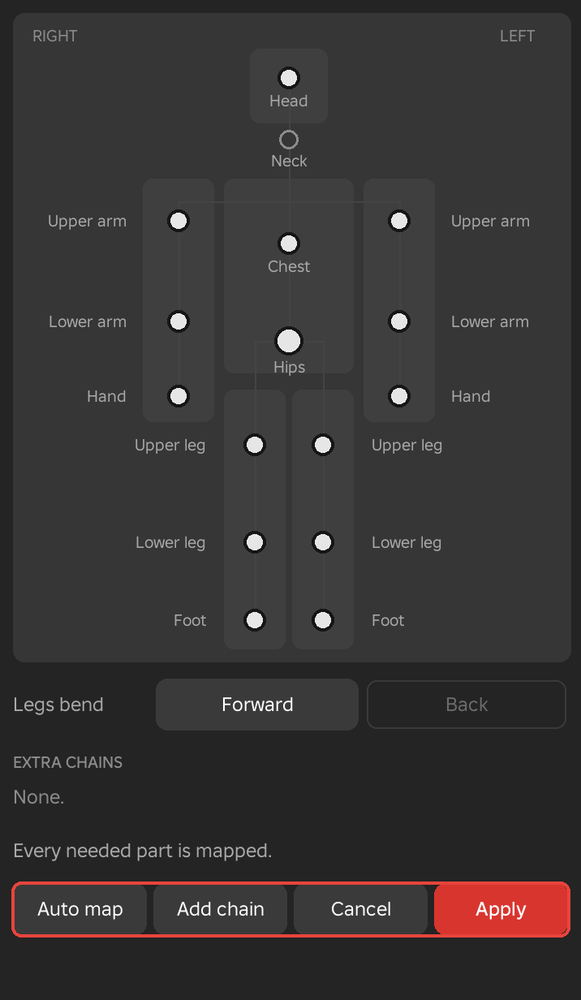
See Also
Control Rig builds its controls from the same map.
Control Rig
- Menu
- File ‣ Rig ‣ Control rig ‣ Build control rig
- File ‣ Rig ‣ Control rig ‣ Control rig...
- File ‣ Rig ‣ Control rig ‣ Remove control rig
- Needs
- An animation open on a rig
A control rig puts a few shapes in the view that you use instead of the joints. A foot control moves its whole leg by IK, a hand control does the same for an arm, and the rings round the hips, chest and head turn those parts. A control has keys of its own on the timeline, and the joints follow it as you work. A save writes the joints as ordinary keys, so the game plays the animation as it plays any other. An animation on a rig with no control rig is not changed.
The setup of controls is saved on the rig, so every animation of the rig, and every copy of it, has the same controls. The keys of the controls are saved with each animation and come back when you open it.
Options
- Build control rig
- Makes the controls from the roles of the rig's joints. R6, R15 and Rthro rigs are read by their joint names, and any other rig through Rig Mapping. A rig gets a foot control for each leg, which starts on IK, and a hand control for each arm, which starts on FK. It also gets rings for the hips, the chest on an R15 and the head, and a Look at control when it has a head. A chain of three joints or more that no other control uses, such as a tail, a cape or an extra chain from Rig Mapping, gets a curve control. Each foot is keyed where it stands at every frame its leg already has a key, so building changes nothing on screen. The row is greyed when the rig already has a control rig. When Framez finds no legs, arms or chains, the status line says to set the joints' roles in Rig mapping first. Building is one undo step.
- Control rig...
- Opens the Control rig window, which shows the controls on a body and adds, removes and saves them. See Control Rig Window.
- Remove control rig
- Takes the controls off the rig. What the controls gave is written into the joints' keys first, a key a frame and then thinned, so the animation looks the same. The row is greyed when the rig has no control rig. Removing is one undo step.
Notes
Timing tools such as Scale keys, Retime and Reverse move the keys of the joints together with the keys, IK / FK switches and spaces of the controls.
Example
For example, build the control rig on an R15 character, select a foot control and move it to place a step, then save. The saved animation holds ordinary keys on the leg joints.
See Also
Controls in the View, Control Rig Window, Foot and Hand, IK / FK
Controls in the View
- Menu
- View ‣ Overlays ‣ Controls
- Needs
- A control rig
- Workspace
- Animate
The controls of a rig are drawn over it as outlines. Controls on the left of the body are blue, controls on the right are red, and controls on the middle of the body are yellow. Framez draws the shapes, and they are not parts of the place.
Options
- Foot box
- A box under each foot, lying flat where the foot control is. A foot that is rolled turns inside its box.
- Roll handle
- A handle round the back of the heel. Drag it up to stand the foot on its toes and down to rock it onto its heel. Each pixel of the drag turns the foot half a degree. Tilt and Swivel are in the Foot section of the Inspector.
- Knee and elbow targets
- A diamond beside each knee and elbow, where the limb points. Drag it round the limb to turn the knee or elbow. The Knee or Elbow number in the Inspector changes with it.
- Wrist ring
- A ring round the wrist of a hand on IK.
- Rings on an FK limb
- A limb on its FK side shows a ring on each of its parts in place of the box or the wrist ring.
- Hips, chest and head
- A ring round each. The chest ring is on R15 rigs.
- Look at ball
- A ball in front of the face. Drag it on the plane of the view, and the head turns toward it. The first drag keys it at full weight.
- Curve points
- Points on the curve of a tail, a cape or another chain, 3 to start with. Drag a point on the plane of the view to bend the chain. Until the curve has a key, it lies along the chain and is drawn faint, and the first drag keys every point where the chain is.
Selecting a Control
Click a shape to select its control. Click the body of a limb that is on IK to select its control as well. Where a ring or an arrow of the selected limb lies over a shape, the click goes to the ring or the arrow. A selected control shows the usual rings or arrows on its joint, and the Inspector shows its page.
A foot or hand control on IK moves its limb. Drag the arrows of the selected control, and the limb bends to reach it. With Auto key on, letting go of a drag keys the control at the playhead, as one undo step. A foot keyed twice at the same place stays there between the two keys, whatever the hips do.
Example
For example, click the box under a foot, drag the arrow that points forward to place a step, then drag the roll handle up to lift the heel while the toes stay on the floor.
See Also
Controls in the Overlays submenu hides the shapes, and Foot and Hand sets the same values by number.
Control Rig Window
- Menu
- File ‣ Rig ‣ Control rig ‣ Control rig...
- Needs
- An animation open on a rig
The Control rig window shows the controls of the open rig on a faint body. Each control is an icon: a foot for a leg, a hand for an arm, a torso for the hips and the chest, a head, and an eye for Look at, joined to the head by a line. Chains and any other control with no place on the body are listed under the figure as Not on the body, each with its icon, its name and its kind at the right, such as Curve, 3 points. The window follows every change, whether it is made in the window, in the view or in the Inspector.
Click an icon or a row to select the control. Its joint is selected too, as if you had clicked it in the view. The control's name shows beside its icon, and its values show under the figure. For a rig with no control rig, the window shows a Build control rig button instead.
Options
- Starts as
- For a leg or an arm, IK or FK. This is the state before the first switch on the timeline.
- Joints
- The joints the control drives, from its first to its last, such as RightUpperArm to RightHand. The box only shows them.
- Heel, toe
- For a foot, two numbers in studs from -2 to 2 that place the points a foot rolls about. Heel moves the heel point back when it is plus and in when it is minus. Toe moves the toe tip forward when it is plus and in when it is minus. A minus Roll turns the foot about the heel point, and a plus Roll turns it about the toe tip.
- Points
- For a curve, 2, 3, 4 or 5 points. Changing it resamples every key, so the shape is kept.
- Add control...
- Opens a menu headed by the name of the joint selected in the view, with five rows. A row that does not apply to that joint is greyed, and its reason shows. A new control takes over the joints of any control that drove them. Adding is one undo step.
- Leg ending here, Arm ending here
- Make a foot or hand control that moves the limb by IK. The joint has to be the end of a limb, such as a foot or a hand. A new leg control starts on IK and a new arm control on FK.
- Curve from here
- Makes a curve control with 3 points along the chain from this joint down. It needs a chain of three joints or more.
- Look at
- Makes a Look at ball that this joint turns toward.
- Rings
- Makes rings round this joint, so the joint can be selected from the view.
- Remove
- Takes the selected control off the rig. What it gave is written into its joints' keys first, a key a frame and then thinned, so the animation looks the same. Removing is one undo step.
- Save as my control rig...
- Asks for a name, which starts as the rig's name, and keeps the rig's controls in Framez. The setup is there for any rig in any place.
- My control rigs
- Lists the setups you saved. Click one to apply it. The rig then has the controls whose joints it has, matched by name, and its IK legs start where the keys have the feet. The status line says how many of the saved controls were applied. Right-click a setup to delete it at once.
Example
For example, select a creature's tail joint, choose Add control... and Curve from here, and bend the tail with the points in the view. Then save the creature's controls as my control rig, to give the same setup to another creature with the same joint names.
See Also
Restore Deleted Rig
- Menu
- File ‣ Rig ‣ Restore deleted rig
Restore deleted rig puts back a rig that was deleted while its animation was open, where it stood, and opens it again. Studio's own undo cannot bring the rig back while an animation is open, because Framez switches it off for that time.
The row is greyed, with the message "No rig has been deleted", until a rig is deleted. After a deletion it names the rig. If Studio destroyed the rig completely, the status line says that it cannot be put back.
Example
For example, if you delete the wrong rig from the Explorer while animating, choose this row at once to get it back.
Mesh Bones
- Needs
- A rig with bones
Creatures, custom avatars, capes, tails, hair and wings that are made as one skinned mesh are animated through their bones. There is no menu row for it. Click the model and open an animation, and its bones show through the body. Every tool then works on bones as it does on joints, including keys, curves, layers, sliders, motion paths, onion skin, mirroring, IK chains through the rig map, Import, effects and held objects.
Options
- Selecting a bone
- Click a drawn bone, or the skin over it. The bone under the pointer turns white and the selected bone is orange.
- Mirroring
- Finds a bone's twin from the side marked in its name, such as .L and .R, _L and _R, Left and Right, or L_ and R_.
- Welded meshes
- A skinned mesh welded to a part, such as a tail on a torso, rides that part and opens with the rig.
- Bones overlay
- A rig with bones opens with the Bones overlay on, drawn as octahedral bones with X-ray. See Bones.
- Track groups
- A rig with many joints lists its tracks in groups, one for each branch.
- Left out
- Bones named like a body part, the face bones of a dynamic head, tip bones whose names end in _end or .end, and bones inside accessories.
Notes
Animations made this way play in the game with no extra script. Edit Pivot and the squash and stretch tools work on parts only. For a bone, use the pivot choices of the right-click limb menu instead.
Example
For example, a dragon with a bone tail, a cape or hair on a skinned avatar, or a creature with wings can be animated like a character, with every tool in Framez.
Close
Close Animation
- Menu
- File ‣ Close animation
Close animation lets go of the rig and returns to the start screen. With unsaved work it asks "Save changes to NAME first?" with Save, Do not save and Cancel. In a scene it asks before closing the scene. Once the animation is closed, Studio's own undo works again.
Example
For example, close the animation before using Studio's own tools to move or edit the rig in the place.